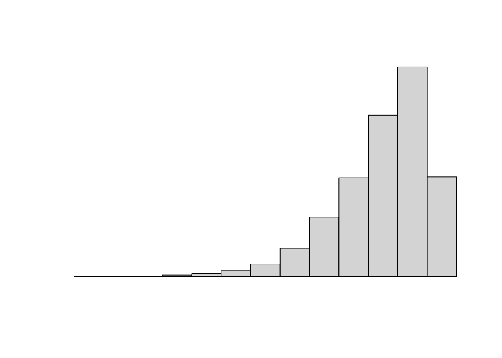

2.1 要約統計量
データを分析する前には分析対象となるデータがどのような特徴を持っているか確認しておくことが重要であるとよく言われます。この特徴を見るには要約統計量を使う場合が多いです。要約統計量はデータの分布の特徴を表すもので、記述統計量や基本統計量と呼ばれることもあります。
2.1.1 平均
算術平均（相加平均）は要約統計量の中でよく使われ、下式で求められます。
\[\begin{equation} \bar{x} = \frac{x_1 + x_2 + \cdots + x_n}{n} = \frac{1}{n} \sum_{i = 1}^n x_i \tag{2.1} \end{equation}\]
算術平均以外にも幾何平均（相乗平均）や \[\begin{equation} \sqrt[n]{x_1 \times x_2 \times \cdots \times x_n} = \sqrt[n]{\prod_{i = 1}^n x_i} \tag{2.2} \end{equation}\]
上記の他に値の下位・上位を任意の割合で除き平均（算術平均）を求めるトリム平均（刈込み平均・調整平均）という平均もあります。トリム平均は異常値や外れ値の影響を排除して平均を求めたい場合に利用されます。例えば体操競技で極端な点数を出す審査員の影響を排除するために使われます。この場合は全審査員の得点から最小と最大を除いたものから平均値を求め、その平均値を得点します。
平均といってもこのように様々な求め方がありますので、実際にRを使ってこれらの平均を求めてみます。
以降、灰色に網掛けされた部分がRのコード、コードの下の##で始まる部分が実行結果（出力）になります。コードによっては実行結果が出力されない場合もあります。
2.1.1.1 算術平均
式(2.1)の算術平均はmean()関数で求めることができます。最初に平均の計算対象となるデータ（変数）をc()関数で作成します。c()関数はベクトル型の変数を作成する関数です。
xは値を代入（格納）する変数、<-は代入演算子4、c()関数はベクトルデータを作成する関数です。代入結果を確認するには以下を実行します。
## [1] 1 3 3 5 7算出平均はmean()関数に計算対象となるxを指定して実行します。
## [1] 3.82.1.1.2 トリム平均
トリム平均は算術平均のコードにtrimオプションを指定するだけです。trimオプションは計算対象外にする割合を指定するオプションです。今回は五つのデータから最小値・最大値の二つを除いてトリム平均を求めますので\(\frac{2}{5} = 0.2\)を指定します。
## [1] 3.666667関数に指定できるオプションを確認した場合場?に続いて関数名を()付きで打ち込んで実行してください。ヘルプが表示されます。
2.1.1.3 幾何平均
式(2.2)の幾何平均（相乗平均）を求める関数は標準では用意されていません。パッケージを追加インストールする必要があります。ここではpsychパッケージを下記の手順でインストールして使います。なお、インストールに際してはインターネット接続が必要です。
- パッケージをインストールする
- パッケージを読み込む
パッケージのインストールはinstall.packages()関数を用います。install.packages()関数を実行すると環境によってはCRANミラーサイトの選択を促される場合があります。その場合は、最も近い地域のミラーサイトを選択してください。なお、パッケージのインストールは一度行えば次からのインストールは不要です。
インストールが完了しましたらlibrary()関数を使ってパッケージを読み込みます。
##
## 次のパッケージを付け加えます: 'psych'## 以下のオブジェクトは 'package:ggplot2' からマスクされています:
##
## %+%, alpha環境によっては上記のように他のパッケージの関数をマスクしている旨のメッセージが出力されますが、今は気にする必要ありません。
これでpsychパッケージを使う準備が整いましたので、geometric.mean()関数で幾何平均を求めます。
## [1] 3.159818インストールしたパッケージの関数を使う場合、どのパッケージの関数を使っているかを明示的に示すために下記のように::演算子（名前空間へのアクセス演算子という）でパッケージ名と関数名をつなげて記述することもできます。
## [1] 3.159818この表記方法については賛否ありますが、どのパッケージの関数を使っているかが分かりやすいので本書ではこの記述方法を用います。
閑話
パッケージ四方山話
幾何平均を求めるためにpsychパッケージを利用しましたが、Rには総積（\(x_1 \times x_2 \times \cdots \times x_n\)）を求めるprod()関数と累乗根（\(x^{\frac{1}{n}}\)）を求めるべき乗演算子（^）がありますので、これを組み合わせれば幾何平均を求めることが可能です。
## [1] 3.159818length()関数は変数xの長さ（変数xの中にある値の個数）を求める関数です。
幾何平均は全ての値をprod()関数で乗算しますのが、データの数が多い場合やデータの値が大きい（または、小さい）場合にprod()関数がオーバーフロー（または、アンダーフロー）を起こしてしまうことがあります。例えば、\(1\)から\(200\)までを乗算するとオーバーフローを起こします。
## [1] Inf一方、geometric.mean()関数は対策が施されていますのでオーバーフローを起こすことなく幾何平均を求めることができます。
## [1] 74.90045このように既にパッケージで提供されている関数があれば、自分でコードを組むよりはパッケージを導入した方が早くて確実です（ここでの本来の目的は幾何平均を求めることでなくデータの特徴を掴むことです）。特にCRANに登録されているパッケージは審査が行われていますので、使わないよりは使った方が確実に目的を達成しやすくなります。Rには先人の知恵が結集していますので、車輪の再発明に挑戦するより先人の知恵を活用する方をおすゝめします。
2.1.2 分散・標準偏差
データの散らばり具合を見るには分散・標準偏差がよく使われます。例えば、以下のxとyが取る値の範囲は同一ですが、同じ散らばり具合と言えるでしょうか？
## [1] 1 9## [1] 1 9散らばり具合を見るためにデータの個々の値と平均値との差の二乗の算術平均を分散（標本分散\(s^2\)）、
\[\begin{equation} s^2 = \frac{1}{n} \sum_{i = 1}^n (x_i - \bar{x})^2 \tag{2.3} \end{equation}\]
単位を戻すために分散の平方根をとったものを標準偏差（標本標準偏差\(s\)）と呼びます。
\[\begin{equation} s = \sqrt{s^2} = \sqrt{\frac{1}{n} \sum_{i = 1}^n (x_i - \bar{x})^2} \tag{2.4} \end{equation}\]
しかし、Rにはこの標本分散（\(s^2\)）を求める関数は用意されていませんが、不偏分散（\(\hat{\sigma}^2\)）を求めるvar()関数が用意されています。
\[\begin{equation} \hat{\sigma}^2 = \frac{1}{n - 1} \sum_{i = 1}^n (x_i - \bar{x})^2 = var(x) \tag{2.5} \end{equation}\]
この二式(2.3)(2.5)から標本分散（\(s^2\)）は
\[\begin{equation} s^2 = \frac{n - 1}{n}\hat{\sigma}^2 = \frac{length(x) - 1}{length(x)}var(x) \tag{2.6} \end{equation}\]
で求めることができます。また、標本標準偏差（\(s\)）は式(2.6)の平方根で求められます。
2.1.3 モーメント
本節の内容はデータ分析ではあまり使いませんので読み飛ばして頂いても結構です。
平均（分布の重心）と分散（分布の広がり）は、歪度（分布の左右非対称度合い）、尖度（分布の峰の尖り度合い）を含めて「モーメントから求められる要約統計量」と呼ぶことがあります。
\(n\)個のデータの平均値を
\[\begin{equation} \bar{x} = \frac{1}{n}\sum_{i = 1}^{n}x_i \tag{2.7} \end{equation}\]
とした場合、平均値まわりの\(m\)次の中央モーメント\(\bar{x}_m\)を
\[\begin{equation} \bar{x}_m = \frac{1}{n}\sum_{i = 1}^{n}(x_i - \bar{x})^m (m = 2, 3, 4) \tag{2.8} \end{equation}\]
と定義します。\(m = 2\)の場合、
\[\begin{equation} \bar{x}_2 = \frac{1}{n}\sum_{i = 1}^{n}(x_i - \bar{x})^2 = s^2 \tag{2.9} \end{equation}\]
となりますので、\(\bar{x}_2\)は分散\(s^2\)であることがわかります。\(m = 3\)の場合、
\[\begin{equation} \bar{x}_3 = \frac{1}{n}\sum_{i = 1}^{n}(x_i - \bar{x})^3 \tag{2.10} \end{equation}\]
となり、これを標準偏差の三乗（\(s^3\)）で割ったもの
\[\begin{equation} \gamma_1 = \frac{\bar{x}_3}{s^3} \tag{2.11} \end{equation}\]
を歪度（\(\gamma_1\)）と呼びます。\(m = 4\)の場合、
\[\begin{equation} \bar{x}_4 = \frac{1}{n}\sum_{i = 1}^{n}(x_i - \bar{x})^4 \tag{2.12} \end{equation}\]
となり、これを標準偏差の四乗、または、分散の二乗（\(s^4\)）で割ったもの
\[\begin{equation} \gamma_2 = \frac{\bar{x}_4}{s^4} \tag{2.13} \end{equation}\]
を尖度（\(\gamma_2\)）と呼びます。
歪度や尖度を求める関数は標準では用意されていませんのでe1071パッケージを用います。
2.1.3.1 歪度
歪度はデータ分布の左右対象度合いです。左右対象となるデータ分布であれば\(0\)、右に歪んでいれば正の値を、左に歪んでいれば負の値を取ります。例えば下図のような分布を持つデータでは 歪度は、ほぼゼロの値となります。
## [1] 0.04548819大きく右に歪んだ（左に偏った）カイ二乗分布のようなデータでは 歪度は正の値をとります。
## [1] 1.318739逆に左に歪んだ（右に偏った）データでは 
負の値をとります。
## [1] -1.3187392.1.4 中央値
平均値や分散・標準偏差はデータの分布が平均値を中心に左右対象になっているような場合は有用な統計量ですが、データの分布が大きく歪んでいる対象に対しては適した統計量とは言えません。このような場合、平均値の代わりに中央値（中位数）や最頻値、分散・標準偏差に代わり範囲・分位範囲（分位値）を用いるます。これらの統計量はデータの中の位置を用いますので、データの分布に影響されることが少ないロバストネス（頑健性の高い）な統計量です。
中央値は文字通り中央（真ん中）に位置する値です。データを小さい順に並べて真ん中に位置する値で、median()関数を使って求めます。データが順番に並んでいなくてもmedian()関数内でソート処理を行います。
## [1] 5データの長さ（値の数）が奇数の場合は、単純に中央の値（上記の場合は\(1, 3, 5, 7, 9\)なので中央に位置する\(5\)）を返しますが、データの長さ偶数の場合は中央に近い両側の値の平均値（相加平均）を返します。
## [1] 5.5例えば、上記のようにデータの長さが偶数（\(6\)）で\(1, 3, 5, 6, 7, 9\)というデータですので、中央に最も近い\(5, 6\)の平均値を中央値としています。
中央値と平均値を比較すると中央値がデータの分布に影響されにくい（ロバストネス）なことが分かります。
## [1] 5## [1] 5## [1] 5## [1] 9.22.1.5 範囲
前述のxとyは、中央値で見る限りと同じデータになってしまいます。この結論はいささか不合理ですので、データのばらつきを範囲（レンジ）で見てみます。範囲を求めるには、その名の通りのrange()を用います。
## [1] 1 3 5 9 7## [1] 1 9## [1] 1 3 5 9 28## [1] 1 28範囲でみるとyの方がxよりばらついていることが分かります。
range()関数は最小値と最大値を一度に取得しています。最小値はmin()関数、最大値はmax()関数で求められますので、range()関数は以下のように処理をしていることが分かります。
## [1] 1 9最小値から最大値の幅を求めたい場合にはmin()関数とmax()関数を用いるよりはdiff()関数を用いた方が簡単です。
## [1] 8## [1] 272.1.6 四分位数・四分位範囲
中央値は中位数と呼ばれるようにデータを二分の一にした場所にあるデータです。さらに細かくして全体を四分の一にしたの場所にあるデータを四分位数と呼びます。小さい方から見て最初の四分の一にある値を第一四分位数（\(25\%\)点、\(Q_1\)）、次の四分の一にある値を第二四分位数（\(50\%\)点、\(Q_2\)）、次の四分の一にある値を第三四分位数（\(75\%\)点、\(Q_3\)）といいます。第二四分位数（\(50%\)点、\(Q_2\)）は中央値（中位数）とイコールです。 四分位数にも範囲があり、四分位範囲（\(IQR\), interquartile range）と呼ばれ以下のように定義されます、
\[\begin{equation} IQR = Q_3 - Q_1 \tag{2.14} \end{equation}\]
四分位数はquantile()関数で求めることができます。オプションを指定しなければ第一〜第三四分位数に加えて最小値（\(0\%点\)）・最大値（\(100\%点\)）を加えた五つの値が返ってきます。
## 0% 25% 50% 75% 100%
## 1 3 5 7 9任意の四分位数を求めたい場合はprobオプションを指定します。probは\(0\)〜\(1\)の間で指定する点に中位してください。
## 25%
## 3複数の四分位数を同時に求めことも可能です。
## 25% 75%
## 3 7四分位範囲（\(IQR\)）を求める場合はIQR()関数が便利です。
## [1] 42.1.7 最頻値
最頻値（モード）とは文字通り、最も頻繁に出てくる値のことです。例えば、以下のxとyは、平均値・中央値・範囲は全て同じ値になるデータです。
## [1] 3.8## [1] 3.8## [1] 3## [1] 3## [1] 8## [1] 8このようなデータに対しては最頻値を用いると平均値・中央値・範囲では見えなかった差異が見える場合があります。最頻値を求める関数は標準では用意されていませんのでmodeestパッケージを用います。
## Registered S3 methods overwritten by 'rmutil':
## method from
## plot.residuals psych
## print.response httr## [1] 1## [1] 32.1.8 まとめ
本節に出てきた要約統計量と関数は下表の通りです。
| 要約統計量 | 表記 | 関数 |
|---|---|---|
| 標本平均 | \(\bar{x}\) | mean(x) |
| トリム平均 | mean(x, trim = t), t = 0 to 0.5 |
|
| 幾何平均 | psych::geometric.mean(x) |
|
| 標本分散 | \(s^2\) | (length(x) - 1) / length(x) * var(x) |
| 不偏分散 | \(\hat{\sigma}^2\) | var(x) |
| 標本標準偏差 | \(s\) | sqrt((length(x) - 1) / length(x) * var(x)) |
| 不偏標本偏差 | \(\hat{\sigma}\) | sd(x) |
| 歪度 | \(\gamma_1\) | e1071::skewness(x) |
| 尖度 | \(\gamma_2\) | e1071::kurtosis |
| 中央値 | median(x) |
|
| 範囲 | \(R\)5 | range(x) or diff(range(x)) |
| 四分位数 | \(Q_n\) | quantile(x) |
| 第\(n\)四分位数 | \(Q_n\) | quantile(x, prob = p), p = 0.25n |
| 四分位範囲 | \(IQR\) | IQR(x) |
| 最頻値 | modeest::mfv(x) |
2.1.9 演習
演習 1
標本分散（\(s^2\)）と不偏分散（\(\hat{\sigma}^2\)）の関係式(2.6)を用いて以下の二つのデータの標本分散（\(s^2\)）を求めなさい。
演習 2
欠損値を含む以下のデータの平均値（\(\bar{x}\)）、不偏分散（\(\hat{\sigma}^2\)）ならびに標本分散（\(s^2\)）を求めなさい。
na.rmオプションを使います
演習 3
コラム
英字？ギリシャ文字？
統計の書籍では様々な統計量を英字で表記する場合とギリシャ文字で表記する場合があり混乱しやすいのですが、英字（アルファベット）で表記されている場合は標本統計量、ギリシャ文字で表記されている場合は母集団の統計量もしくは母集団の推定統計量を意味しています。
推定統計量を表記する場合、推定であることを意味するハット（ \(\hat{}\) ）という記号をつけます。平均と分散・標準偏差を使って整理すると下表のようになります。
| 統計量 | 平均 | 分散 | 標準偏差 | 備考 |
|---|---|---|---|---|
| 母集団の統計量 | \(\mu\) | \(\sigma^2\) | \(\sigma\) | 神のみぞ知る統計量 |
| （不偏）推定量 | \(\hat{\mu}\) | \(\hat{\sigma}^2\) | \(\hat{\sigma}\) | 標本から母集団を推定した統計量 |
| 標本統計量 | \(\bar{x}\) | \(s^2\) | \(s\) | 標本から求める統計量 |